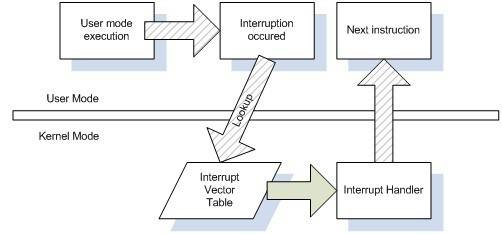
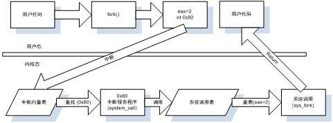
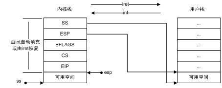
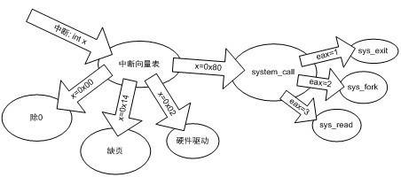
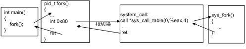
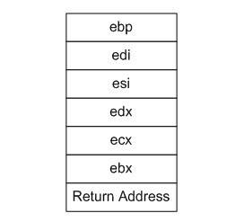
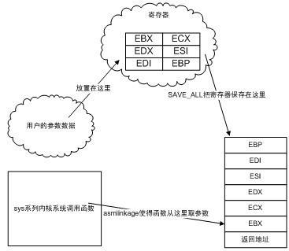

12.2 系統呼叫原理
12.2.1 特權級與中斷
現代的CPU常常可以在多種截然不同的特權級別下執行指令，在現代作業系統中，通常也據此有兩種特權級別，分別為使用者模式（User Mode）和核心模式（Kernel Mode），也被稱為使用者態和核心態。由於有多種特權模式的存在，作業系統就可以讓不同的程式碼執行在不同的模式上，以限製它們的權力，提高穩定性和安全性。普通應用程式執行在使用者態的模式下，諸多操作將受到限製，這些操作包括訪問硬體裝置、開關中斷、改變特權模式等。
一般來說，執行在高特權級的程式碼將自己降至低特權級是允許的，但反過來低特權級的程式碼將自己提升至高特權級則不是輕易就能進行的，否則特權級的作用就有名無實了。在將低特權級的環境轉為高特權級時，需要使用一種較為受控和安全的形式，以防止低特權模式的程式碼破壞高特權模式程式碼的執行。
系統呼叫是執行在核心態的，而應用程式基本都是執行在使用者態的。使用者態的程式如何執行核心態的程式碼呢？作業系統一般是透過中斷（Interrupt）來從使用者態切換到核心態。什麼是中斷呢？中斷是一個硬體或軟體發出的請求，要求CPU暫停當前的工作轉手去處理更加重要的事情。舉一個例子，當你在編輯文字檔案的時候，鍵盤上的鍵不斷地被按下，CPU如何獲知這一點的呢？一種方法稱為輪詢（Poll），即CPU每隔一小段時間（幾十到幾百毫秒）去詢問鍵盤是否有鍵被按下，但除非使用者是瘋狂打字員，否則大部分的輪詢行為得到的都是“沒有鍵被按下”的回應，這樣操作就被浪費掉了。另外一種方法是CPU不去理睬鍵盤，而當鍵盤上有鍵被按下時，鍵盤上的晶片傳送一個訊號給CPU，CPU接收到訊號之後就知道鍵盤被按下了，然後再去詢問鍵盤被按下的鍵是哪一個。 這樣的訊號就是一種中斷，結果如圖12-1所示。
圖12-1 現實中的中斷 …
中斷一般具有兩個屬性，一個稱為中斷號（從0開始），一個稱為中斷處理程式（Interrupt Service Routine, ISR）。不同的中斷具有不同的中斷號，而同時一個中斷處理程式一一對應一個中斷號。在核心中，有一個陣列稱為中斷向量表（Interrupt Vector Table），這個陣列的第n項包含了指向第n號中斷的中斷處理程式的指標。當中斷到來時，CPU會暫停當前執行的程式碼，根據中斷的中斷號，在中斷向量表中找到對應的中斷處理程式，並呼叫它。中斷處理程式執行完成之後，CPU會繼續執行之前的程式碼。一個簡單的示意圖如圖12-2所示。

通常意義上，中斷有兩種型別，一種稱為硬體中斷，這種中斷來自於硬體的異常或其他事件的發生，如電源掉電、鍵盤被按下等。另一種稱為軟體中斷，軟體中斷通常是一條指令（i386下是int），帶有一個引數記錄中斷號，使用這條指令使用者可以手動觸發某個中斷並執行其中斷處理程式。例如在i386下，int 0x80這條指令會呼叫第0x80號中斷的處理程式。
由於中斷號是很有限的，作業系統不會捨得用一個中斷號來對應一個系統呼叫，而更傾向於用一個或少數幾個中斷號來對應所有的系統呼叫。例如，i386下Windows裡絕大多數系統呼叫都是由int 0x2e來觸發的，而Linux則使用int 0x80來觸發所有的系統呼叫。對於同一個中斷號，作業系統如何知道是哪一個系統呼叫要被呼叫呢？和中斷一樣，系統呼叫都有一個系統呼叫號，就像身份標識一樣來表明是哪一個系統呼叫，這個系統呼叫號通常就是系統呼叫在系統呼叫表中的位置，例如Linux裡fork的系統呼叫號是2。這個系統呼叫號在執行int指令前會被放置在某個固定的暫存器裡，對應的中斷程式碼會取得這個系統呼叫號，並且呼叫正確的函式。以Linux的int 0x80為例，系統呼叫號是由eax來傳入的。使用者將系統呼叫號放入eax，然後使用int 0x80呼叫中斷，中斷服務程式就可以從eax裡取得系統呼叫號，進而呼叫對應的函式。
12.2.2 基於int的Linux的經典系統呼叫實現
在本節裡，我們將瞭解到當應用程式呼叫系統呼叫時，程式是如何一步步進入作業系統核心呼叫相應函式的。圖12-3是以fork為例的Linux系統呼叫的執行流程。

接下來讓我們一步一步地瞭解這個過程的細節。
1. 觸發中斷
首先當程式在程式碼裡呼叫一個系統呼叫時，是以一個函式的形式呼叫的，例如程式呼叫fork：
int main()
{
fork();
}
fork函式是一個對系統呼叫fork的封裝，可以用下列宏來定義它：
_syscall0(pid_t, fork);
_syscall0是一個宏函式，用於定義一個沒有引數的系統呼叫的封裝。它的第一個引數為這個系統呼叫的返回值型別，這裡為pid_t，是一個Linux自定義型別，代表程式的id。_syscall0的第二個引數是系統呼叫的名稱，_syscall0展開之後會形成一個與系統呼叫名稱同名的函式。下面的程式碼是i386版本的syscall0定義：
#define _syscall0(type,name) \
type name(void) \
{ \
long __res; \
__asm__ volatile ("int $0x80" \
: "=a" (__res) \
: "0" (__NR_##name)); \
__syscall_return(type,__res); \
}
對於syscall0(pid_t, fork)，上面的宏將展開為：
pid_t fork(void)
{
long __res;
__asm__ volatile ("int $0x80"
: "=a" (__res)
: "0" (__NR_fork));
__syscall_return(pid_t,__res);
}
如果讀者對這種AT&T格式的組譯不熟悉，請看下面的解釋。
首先__asm__是一個gcc的關鍵字，表示接下來要嵌入組合語言程式碼。volatile關鍵字告訴GCC對這段程式碼不進行任何最佳化。
__asm__的第一個引數是一個字串，代表組合語言程式碼的文字。這裡的組合語言程式碼只有一句：int $0x80，這就要呼叫0x80號中斷。
“=a”（__res）表示用eax（a表示eax）輸出返回資料並儲存在__res裡。
“0”(__NR_##name))表示__NR_##name為輸入，“0”指示由編譯器選擇和輸出相同的暫存器（即eax）來傳遞引數。
更直觀一點，可以把這段組譯改寫為更為可讀的格式：
main -> fork:
pid_t fork(void)
{
long __res;
$eax = __NR_fork
int $0x80
__res = $eax
__syscall_return(pid_t,__res);
}
__NR_fork是一個宏，表示fork系統呼叫的呼叫號，對於x86體係結構，該宏的定義可以在Linux/include/asm-x86/unistd_32.h裡找到：
#define __NR_restart_syscall 0 #define __NR_exit 1 #define __NR_fork 2 #define __NR_read 3 #define __NR_write 4 ......
而__syscall_return是另一個宏，定義如下：
#define __syscall_return(type, res) \
do { \
if ((unsigned long)(res) >= (unsigned long)(-125)) { \
errno = -(res); \
res = -1; \
} \
return (type) (res); \
} while (0)
這個宏用於檢查系統呼叫的返回值，並把它相應地轉換為C語言的errno錯誤碼。在Linux裡，系統呼叫使用返回值傳遞錯誤碼，如果返回值為負數，那麼表明呼叫失敗，返回值的絕對值就是錯誤碼。而在C語言裡則不然，C語言裡的大多數函式都以返回?1表示呼叫失敗，而將出錯資訊儲存在一個名為errno的全域性變數（在多執行緒庫中，errno儲存於TLS中）裡。__syscall_return就負責將系統呼叫的返回資訊儲存在errno中。這樣，fork函式在組譯之後，就會形成類似如下的組合語言程式碼：
fork: mov eax, 2 int 0x80 cmp eax,0xFFFFFF83 jb syscall_noerror neg eax mov errno, eax mov eax,0xFFFFFFFF syscall_noerror: ret
如果系統呼叫本身有引數要如何實現呢？下面是x86 Linux下的syscall1，用於帶1個引數的系統呼叫：
#define _syscall2(type, name, type1, arg1) \
type name(type1 arg1) \
{ \
long __res; \
__asm__ volatile ("int $0x80" \
: "=a" (__res) \
: "0" (__NR_##name), "b" ((long)(arg1))); \
__syscall_return(type,__res); \
}
這段程式碼和_syscall0不同的是，它多了一個“b” ((long)(arg1))。這一句的意思是先把arg1強製轉換為long，然後存放在EBX（b代表EBX）裡作為輸入。編譯器還會生成相應的程式碼來保護原來的EBX的值不被破壞。這段組譯可以改寫為：
push ebx eax = __NR_##name ebx = arg1 int 0x80 __res = eax pop ebx
可見，如果系統呼叫有1個引數，那麼引數透過EBX來傳入。x86下Linux支援的系統呼叫引數至多有6個，分別使用6個暫存器來傳遞，它們分別是EBX、ECX、EDX、ESI、EDI和EBP。
當使用者呼叫某個系統呼叫的時候，實際是執行了以上一段組合語言程式碼。CPU執行到int $0x80時，會儲存現場以便恢複，接著會將特權狀態切換到核心態。然後CPU便會查詢中斷向量表中的第0x80號元素。
以上是Linux實現系統呼叫入口的思路，不過也許你會想知道glibc是否真的是如此封裝系統呼叫的？答案是否定的。glibc使用了另外一套呼叫系統呼叫的方法，盡管原理上仍然是使用0x80號中斷，但細節上卻是不一樣的。由於這種方法與我們前面介紹的方法本質上是一樣的，所以在這裡就不介紹了。
2. 切換堆疊
在實際執行中斷向量表中的第0x80號元素所對應的函式之前，CPU首先還要進行棧的切換。在Linux中，使用者態和核心態使用的是不同的棧，兩者各自負責各自的函式呼叫，互不幹擾。但在應用程式呼叫0x80號中斷時，程式的執行流程從使用者態切換到核心態，這時程式的當前棧必須也相應地從使用者棧切換到核心棧。從中斷處理函式中返回時，程式的當前棧還要從核心棧切換回使用者棧。
所謂的“當前棧”，指的是ESP的值所在的棧空間。如果ESP的值位於使用者棧的範圍內，那麼程式的當前棧就是使用者棧，反之亦然。此外，暫存器SS的值還應該指向當前棧所在的頁。所以，將當前棧由使用者棧切換為核心棧的實際行為就是：
（1）儲存當前的ESP、SS的值。
（2）將ESP、SS的值設定為核心棧的相應值。
反過來，將當前棧由核心棧切換為使用者棧的實際行為則是：
（1）恢複原來ESP、SS的值。
（2）使用者態的ESP和SS的值儲存在哪裡呢？答案是核心棧上。這一行為由i386的中斷指令自動地由硬體完成。
當0x80號中斷發生的時候，CPU除了切入核心態之外，還會自動完成下列幾件事：
（1）找到當前程式的核心棧（每一個程式都有自己的核心棧）。
（2）在核心棧中依次壓入使用者態的暫存器SS、ESP、EFLAGS、CS、EIP。
而當核心從系統呼叫中返回的時候，需要呼叫iret指令來回到使用者態，iret指令則會從核心棧裡彈出暫存器SS、ESP、EFLAGS、CS、EIP的值，使得棧恢複到使用者態的狀態。這個過程可以用圖12-4來表示。

3. 中斷處理程式
在int指令合理地切換了棧之後，程式的流程就切換到了中斷向量表中記錄的0x80號中斷處理程式。Linux內部的i386中斷服務流程如圖12-5所示。

i386的中斷向量表在Linux原始碼的Linux/arch/i386/kernel/traps.c裡可見一部分。在該檔案的末尾，我們能看到一個函式trap_init，該函式用於初始化中斷向量表：
void __init trap_init(void)
{
......
set_trap_gate(0,÷_error);
set_intr_gate(1,&debug);
set_intr_gate(2,&nmi);
set_system_intr_gate(3, &int3); set_system_gate(4,&overflow);
set_system_gate(5,&bounds);
set_trap_gate(6,&invalid_op);
set_trap_gate(7,&device_not_available);
set_task_gate(8,GDT_ENTRY_DOUBLEFAULT_TSS);
set_trap_gate(9,&coprocessor_segment_overrun);
set_trap_gate(10,&invalid_TSS);
set_trap_gate(11,&segment_not_present);
set_trap_gate(12,&stack_segment);
set_trap_gate(13,&general_protection);
set_intr_gate(14,&page_fault);
set_trap_gate(15,&spurious_interrupt_bug);
set_trap_gate(16,&coprocessor_error);
set_trap_gate(17,&alignment_check);
#ifdef CONFIG_X86_MCE
set_trap_gate(18,&machine_check);
#endif
set_trap_gate(19,&simd_coprocessor_error);
set_system_gate(SYSCALL_VECTOR,&system_call);
......
}
以上程式碼中的函式set_intr_gate/set_trap_gate/set_system_gate/ set_system_intr_gate用於設定某個中斷號上的中斷處理程式。之所以區分為3種名字，是因為在i386下對中斷有更加細致的劃分，限於篇幅這裡就不詳細介紹了，讀者在這裡可以暫時將它們都等同對待。
從這段程式碼可以看到0～19號中斷對應的中斷處理程式，其中包含算數異常（除零、溢位）、頁缺失（page fault）、無效指令等。在最後一行：
set_system_gate(SYSCALL_VECTOR,&system_call);
可看出這是系統呼叫對應的中斷號，在Linux/include/asm-i386/mach-default/irq_vectors.h裡可以找到SYSCALL_VECTOR的定義：
#define SYSCALL_VECTOR 0x80
可見i386下Linux的系統呼叫對應的中斷號確實是0x80。必然的，使用者呼叫int 0x80之後，最終執行的函式是system_call，該函式在Linux/arch/i386/kernel/entry.S裡可以找到定義。但很遺憾，這段程式碼是由組譯寫成並且篇幅較長，因此必須一段一段選擇性地研究：
main -> fork -> int 0x80 -> system_call:
ENTRY(system_call)
......
SAVE_ALL
......
cmpl $(nr_syscalls), %eax
jae syscall_badsys
這一段是system_call的開頭，中間省略了一些不太重要的程式碼。在這裡一開始使用宏SAVE_ALL將各種暫存器壓入棧中，以免它們的值被後續執行的程式碼所覆蓋。然後接下來使用cmpl指令比較eax和nr_syscalls的值，nr_syscalls是比最大的有效系統呼叫號大1的值，因此，如果eax（即使用者傳入的系統呼叫號）大於等於nr_syscalls，那麼這個系統呼叫就是無效的，如果這樣，接著就會跳轉到後面的syscall_badsys執行。如果系統呼叫號是有效的，那麼程式就會執行下面的程式碼：
syscall_call:
call *sys_call_table(0,%eax,4)
......
RESTORE_REGS
......
iret
確定系統呼叫號有效並且儲存了暫存器之後，接下來要執行的就是呼叫*sys_call_table (0,%eax,4)來查詢中斷服務程式並執行。執行結束之後，使用宏RESTORE_REGS來恢複之前被SAVE_ALL儲存的暫存器。最後透過指令iret從中斷處理程式中返回。
究竟什麼是*sys_call_table(0,%eax,4)呢？我們在Linux/arch/i386/kernel/syscall_table.S裡能找到定義：
.data
ENTRY(sys_call_table)
.long sys_restart_syscall
.long sys_exit
.long sys_fork
.long sys_read
.long sys_write
......
這就是Linux的i386系統呼叫表，這個表裡的每一個元素（long，4位元組）都是一個系統呼叫函式的地址。那麼不難推知*sys_call_table(0,%eax,4)指的是sys_call_table上偏移量為0+%eax * 4上的那個元素的值指向的函式，也就是%eax所記錄的系統呼叫號所對應的系統呼叫函式（見圖12-6）。接下來系統就會去呼叫相應的系統呼叫函式。例如，如果%eax=2，那麼sys_fork就會呼叫。
核心裡的系統呼叫函式往往以sys_加上系統呼叫函式名來命名，例如sys_fork、sys_open等。
整個呼叫過程如圖12-6所示。

Q&A
Q：核心裡以sys開頭的系統呼叫函式是如何從使用者那裡獲得引數的？
A：我們知道使用者呼叫系統呼叫時，根據系統呼叫引數數量的不同，依次將引數放入EBX、ECX、EDX、ESI、EDI和EBP這6個暫存器中傳遞。例如一個引數的系統呼叫就是用EBX，而兩個引數的系統呼叫就使用EBX和ECX，以此類推。
在進入系統呼叫的服務程式system_call的時候，system_call呼叫了一個宏SAVE_ALL來儲存各個暫存器，由於篇幅原因我們沒有在正文中仔細講解SAVE_ALL。不過SAVE_ALL實際與系統呼叫的引數傳遞息息相關，所以有必要在這裡提一下。
SAVE_ALL的作用為儲存暫存器，因此其內容就是將各個暫存器壓入棧中。SAVE_ALL的大致內容如下：
#define SAVE_ALL \
......
push %eax
push %ebp
push %edi
push %esi
push %edx
push %ecx
push %ebx
mov $(KERNEL_DS), %edx
mov %edx, %ds
mov %edx, %es
拋開SAVE_ALL的最後3個mov指令不看（這3條指令用於設定核心資料段，它們不影響棧），我們可以發現SAVE_ALL的一係列push指令的最後6條所壓入棧中的暫存器恰好就是用來存放系統呼叫引數的6個暫存器，連順序都一樣，這當然不是一個巧合。
再回到system_call的程式碼，我們可以發現，在執行SAVE_ALL與執行call *sys_call_table(0,%eax,4)之間，沒有任何程式碼會影響到棧。因此剛剛進入sys開頭的核心系統呼叫函式的時候，棧上恰好是這樣的情景，如圖12-7所示。

可以說，系統呼叫的引數被SAVE_ALL“陰差陽錯”地放置在了棧上。
另一方面，所有以sys開頭的核心系統呼叫函式，都有一個asmlinkage的標識，例如：asmlinkage pid_t sys_fork(void);
asmlinkage是一個宏，定義為：__attribute__ ((regparm(0)))
這個擴充套件關鍵字的意義是讓這個函式只從棧上獲取引數。因為gcc對普通函式有最佳化措施，會使用暫存器來傳遞引數，而SAVE_ALL將引數全部放置於棧上，因此必須使用asmlinkage來強迫函式從棧上獲取引數。這樣一來，核心裡的系統呼叫函式就可以正確地獲取使用者提供的引數了。整個過程可以用圖12-8表示。

12.2.3 Linux的新型系統呼叫機制
由於基於int指令的系統呼叫在奔騰4代處理器上效能不佳，Linux在2.5版本起開始支援一種新型的系統呼叫機制。這種新機制使用Intel在奔騰2代處理器就開始支援的一組專門針對系統呼叫的指令——sysenter和sysexit。在本節中，我們將對這種新系統呼叫機制進行一個初步的瞭解。
如果使用ldd來獲取一個執行檔的共用函式庫的依賴情況，你會發現一些奇怪的現象：
$ ldd /bin/ls
linux-gate.so.1 => (0xffffe000)
librt.so.1 => /lib/tls/i686/cmov/librt.so.1 (0xb7f7a000)
libacl.so.1 => /lib/libacl.so.1 (0xb7f74000)
libselinux.so.1 => /lib/libselinux.so.1 (0xb7f5e000)
libc.so.6 => /lib/tls/i686/cmov/libc.so.6 (0xb7e2d000)
libpthread.so.0 => /lib/tls/i686/cmov/libpthread.so.0 (0xb7e1b000)
/lib/ld-linux.so.2 (0xb7f97000)
libattr.so.1 => /lib/libattr.so.1 (0xb7e17000)
libdl.so.2 => /lib/tls/i686/cmov/libdl.so.2 (0xb7e13000)
libsepol.so.1 => /lib/libsepol.so.1 (0xb7dd2000)
我們可以看到linux-gate.so.1沒有與任何實際的檔案相對應，這個共用函式庫在前面分析Linux共用函式庫的時候也與它碰過面，但是當時沒有深入地分析它。那麼這個庫究竟是做什麼的呢？答案正是Linux用於支援新型系統呼叫的“虛擬”共用函式庫。linux-gate.so.1並不存在實際的檔案，它只是作業系統生成的一個虛擬動態共用函式庫（Virtual Dynamic Shared Library，VDSO）。這個庫總是被載入在地址0xffffe000的位置上。我們可以透過Linux的proc檔案系統來檢視一個可執行程式的記憶體映像，看看能不能找到這個虛擬檔案：
$ cat /proc/self/maps 08048000-0804c000 r-xp 00000000 08:01 13271 /bin/cat 0804c000-0804d000 rw-p 00003000 08:01 13271 /bin/cat ...... bfd65000-bfd7a000 rw-p bffeb000 00:00 0 [stack] ffffe000-fffff000 r-xp 00000000 00:00 0 [vdso]
命令cat /proc/self/maps可以檢視cat命令自己的記憶體佈局。我們可以看見地址0xffffe000到0xfffff000的地方被對映了vdso，也就是linux-gate.so.1。這個虛擬檔案的大小為4096個位元組。因為這個檔案在任何程式裡都處於相同的位置，因此可以用如下方法將它匯出到一個真實的檔案裡：
$dd if=/proc/self/mem of=linux-gate.dso bs=4096 skip=1048574 count=1
此時，linux-gate.dso的內容就是vdso的內容。接下來就可以用各種工具來分析它了。首先用objdump來看看這個檔案裡有什麼：
$ objdump -T linux-gate.dso linux-gate.dso： 文件格式 elf32-i386 DYNAMIC SYMBOL TABLE: ffffe400 l d .text 00000000 .text ffffe478 l d .eh_frame_hdr 00000000 .eh_frame_hdr ffffe480 l d .eh_frame 00000000 .eh_frame ffffe604 l d .useless 00000000 .useless ffffe400 g DF .text 00000014 LINUX_2.5 __kernel_vsyscall 00000000 g DO *ABS* 00000000 LINUX_2.5 LINUX_2.5 ffffe440 g DF .text 00000007 LINUX_2.5 __kernel_rt_sigreturn ffffe420 g DF .text 00000008 LINUX_2.5 __kernel_sigreturn
可以看到，vdso匯出了一係列函式，當然這裡最值得關心的是__kernel_vsyscall函式。這個函式負責進行新型的系統呼叫。現在來看看這個函式的內容:
objdump -d --start-address=0xffffe400 --stop-address=0xffffe408 linux-gate.dso
該命令從0xffffe400處開始反組譯8個位元組，讓我們看看結果：
$ objdump -d --start-address=0xffffe400 --stop-address=0xffffe414 linux-gate.dso linux-gate.dso： 文件格式 elf32-i386
反組譯 .text 節：
ffffe400 <__kernel_vsyscall>: ffffe400: 51 push %ecx ffffe401: 52 push %edx ffffe402: 55 push %ebp ffffe403: 89 e5 mov %esp,%ebp ffffe405: 0f 34 sysenter ffffe407: 90 nop
在這裡出現了一個以前沒見過的組語指令sysenter。這就是Intel在奔騰2代處理器開始提供支援的新型系統呼叫指令。呼叫sysenter之後，系統會直接跳轉到由某個暫存器指定的函式執行，並自動完成特權級轉換、堆疊切換等功能。
在引數傳遞方面，新型的系統呼叫和使用int的系統呼叫完全一樣，仍然使用EBX、ECX、EDX、ESI、EDI和EBP這6個暫存器傳遞。在核心裡也是透過SAVE_ALL將這些引數放置在棧上。因此，我們可以自己呼叫這個__kernel_vsyscall函式來試試：
【小實驗】
人工呼叫系統呼叫：
int main() {
int ret;
char msg[] = "Hello\n";
__asm__ volatile (
"call *%%esi"
: "=a" (ret)
: "a" (4),
"S" (0xffffe400),
"b" ((long) 1),
"c" ((long) msg),
"d" ((long) sizeof(msg)));
return 0;
}
讀者應該還記得，在Linux下fd=1表示stdout。因此向fd=1寫入資料等效於向命令列輸出，這個例子就是這個目的。我們在main函式裡將__kernel_vsyscall函式的地址賦值給esi(”S”表示esi)，並且使用指令call呼叫這個地址。與此同時，還在eax中放入了系統呼叫write的呼叫號(4)，在ebx、ecx、edx中放入write的引數，這樣就完成了一次系統呼叫，在螢幕上輸出了Hello。
關於使用sysenter指令進入核心之後是如何執行的，在這裡就不佔用篇幅詳細介紹了，如果讀者有興趣,可以參考Intel的CPU指令手冊，並且結合閱讀Linux的核心原始碼中關於sysenter的實現程式碼：/arch/i386/kernel/sysenter.c。
Q&A
Q：dd if=/proc/self/mem of=linux-gate.dso bs=4096 skip=1048574 count=1這個命令是如何得到vdso的印像檔案的？
A：dd的作用為複製檔案，if引數代表輸入的檔案，而of引數代表輸出的檔案。/proc/self/ mem總是等價於當前程式的記憶體快照，換句話說，這個檔案的內容就是dd的記憶體內容。引數bs代表dd一次性需要搬運的位元組數（這稱為一個塊），skip代表需要從檔案開頭處跳過多少個塊。count則表示需要搬運多少個塊。
瞭解了dd引數的含義之後，這個命令的作用就清晰了。我們希望複製dd的記憶體映像裡地址0xffffe000之後的count=1個塊（這裡塊大小=bs=0x1000=4096），那麼就需要跳過前面0xffffe000個位元組，也就是0xffffe000/0x1000=FFFFE=1048574個塊，因此skip設定為1048574。將這些資料輸出為linux-gate.dso，就得到了這個虛擬檔案的映像。